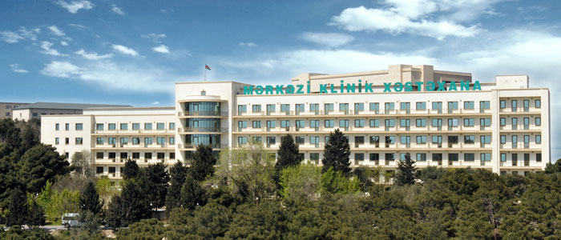
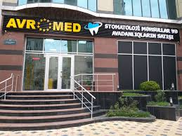
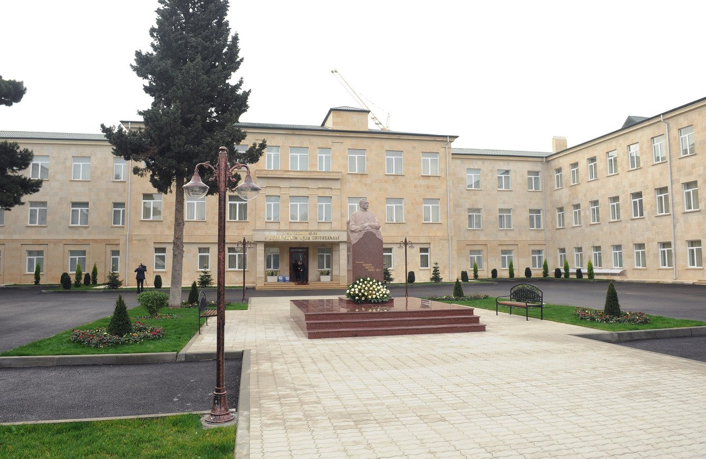
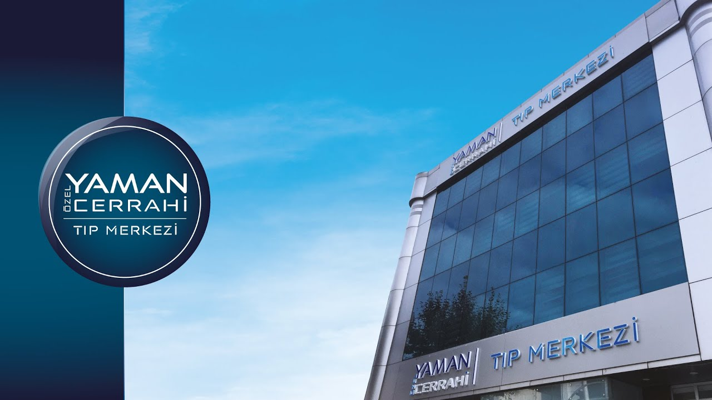
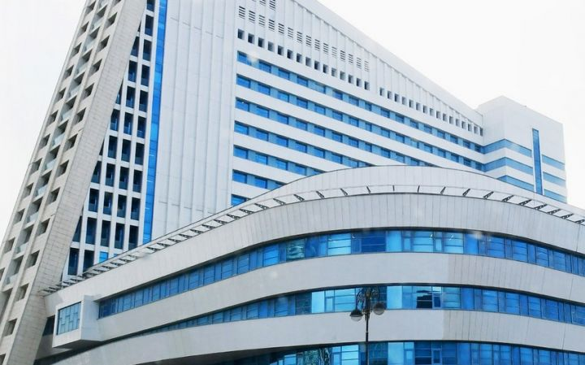
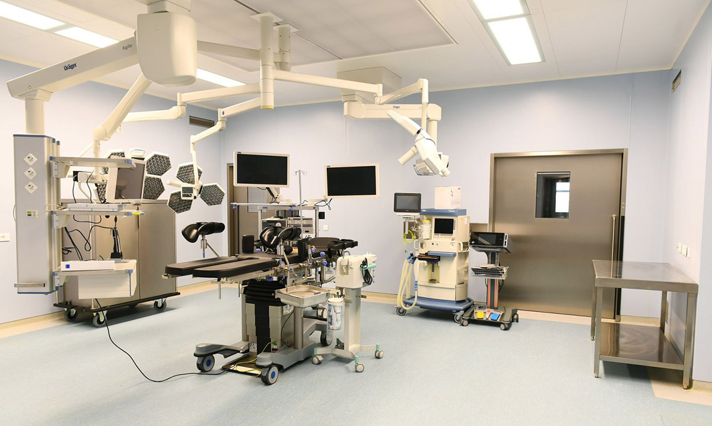

Mərkəzi Klinika
Nəsimi rayonu, Azadlıq prospekti 12
+994 12 555 10 10
24/7
18Şöbə
85Həkim

Avromed Klinikası
Yasamal rayonu, Cəfər Cabbarlı küç. 40
+994 12 555 20 20
08:00 - 20:00
15Şöbə
72Həkim

Uşaq Xəstəxanası
Nərimanov rayonu, 28 May küç. 5
+994 12 555 30 30
24/7
12Şöbə
64Həkim

Cərrahi Mərkəz
Səbail rayonu, Neftçilər prospekti 88
+994 12 555 40 40
24/7
10Şöbə
58Həkim

Dəri Xəstəlikləri Klinikası
Xətai rayonu, Atatürk prospekti 23
+994 12 555 50 50
09:00 - 19:00
8Şöbə
42Həkim

Göz Klinikası
Binəqədi rayonu, Həzi Aslanov küç. 7
+994 12 555 60 60
08:00 - 18:00
6Şöbə
38Həkim